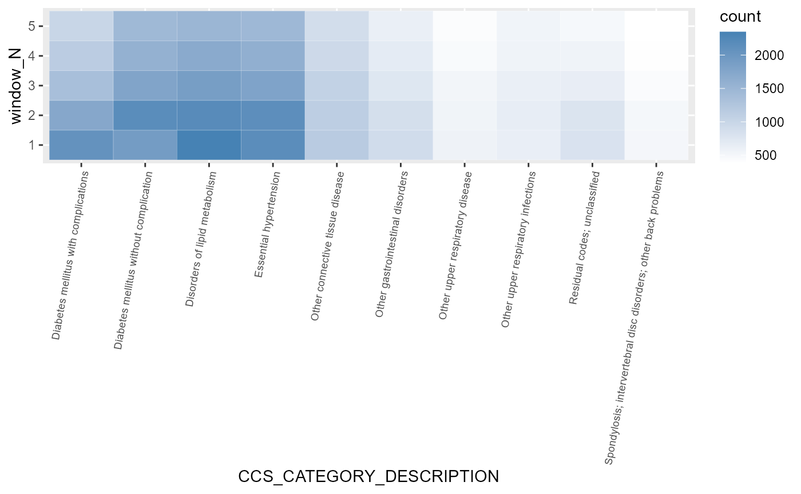

Getting started with dxtime
Yi-An, Chu
2021-07-17
dxtime.Rmd安裝套件
install.packages("devtools")
# Install development version from GitHub
devtools::install_github("DHLab-TSENG/dxtime")
library(dxtime)## Warning: package 'C:/Users/anay1/Desktop/R/dxtime' is not available for this version of R
##
## A version of this package for your version of R might be available elsewhere,
## see the ideas at
## https://cran.r-project.org/doc/manuals/r-patched/R-admin.html#Installing-packages## Warning: replacing previous import 'data.table::transpose' by 'purrr::transpose'
## when loading 'dxtime'範例資料
以下功能介紹皆以pat_dm以及record_dm做為範例。
pat_dm中共200名個案，170位病例組(label=1)，30位為對照組(label=0);
record_dm為該200名個案在指標日(發生疾病/最後一筆…)的之診斷紀錄。
head(pat_dm)
#> ID birthday gender label age
#> 1: 1 1956-03-18 F 0 50
#> 2: 2 1976-04-26 M 0 42
#> 3: 3 1950-06-02 M 0 68
#> 4: 4 1984-10-21 M 0 33
#> 5: 5 1944-08-01 M 0 74
#> 6: 6 1982-11-27 M 0 32
head(record_dm)
#> ID date ICD
#> 1: 149 2015-07-08 4019
#> 2: 149 2015-07-08 2720
#> 3: 149 2015-07-08 7840
#> 4: 149 2015-09-30 4019
#> 5: 149 2015-09-30 2720
#> 6: 149 2015-09-30 7840使用流程

 ## 功能說明 ### 一、篩選符合研究長度之個案及診斷紀錄
## 功能說明 ### 一、篩選符合研究長度之個案及診斷紀錄
在病例對照研究，會探討回溯期間內的暴露因子與疾病發生的關係。隨著回溯時間長度越長，所囊括的暴露的危險因子會越多，樣本比較之下，將會造成「回溯時長較長的樣本，危險因子較多」的偏誤。
為避免這種偏誤，固定追蹤時長是較佳的作法。但每個樣本的發病日期(indexDate)並不相同，在filterCasesRecords()可回推追蹤時間，找出追蹤時間範圍內的診斷資料；此外，資料長度不足的樣本也可將之排除。
主要需設定的參數有:predictGap: 預測天數，意指「想要於指標日多久前進行預測」。exposurePeriod：此研究所設定的危險因子暴露時長，將用於篩選時間範圍內的診斷紀錄。includePeriodAtLeast：病患須擁有的資料長度下限。結果將依設定將資料長度不足的個案於以排除，預設為0。countICDAtLeast：病患須擁有的資料筆數下限，若是診斷紀錄的筆數過少，有可能意味著該個案極少至此醫療單位看診，研究者可設定診斷紀錄的數量下限，來決定是否採納此個案之紀錄，預設為0。align：設定納入資料的方式，是由起始點往後(align=“left”)，或是預測點往回推(align=“right”)，預設為right。
執行結束會產生兩種結果，分別是Patient(病患資料)及Record(診斷資料)。
#dxData <- merge(record_dm,pat_dm[,c("ID","label")],by="ID",all.x=T)
length <- filterCasesRecords(DataFile = record_dm,
idColName = ID,
icdColName = ICD,
dateColName = date,
predictGap = 180,
exposurePeriod = 1800,
includePeriodAtLeast = 360,
countICDAtLeast = 2,
align="right"
)
head(length$Patient)
#> ID firstDate predictDate indexDate includePeriod countICD cri
#> 1: 149 2002-03-05 2018-04-27 2018-10-24 5897 167 TRUE
#> 2: 196 2006-10-21 2017-01-30 2017-07-29 3754 106 TRUE
#> 3: 61 2001-05-13 2017-07-16 2018-01-12 5908 57 TRUE
#> 4: 142 2001-02-09 2018-04-08 2018-10-05 6267 1020 TRUE
#> 5: 98 2002-01-11 2004-01-08 2004-07-06 727 191 TRUE
#> 6: 5 2014-01-16 2018-02-21 2018-08-20 1497 158 TRUE
head(length$Record)
#> ID ICD date
#> 1: 149 4019 2015-07-08
#> 2: 149 2720 2015-07-08
#> 3: 149 7840 2015-07-08
#> 4: 149 4019 2015-09-30
#> 5: 149 2720 2015-09-30
#> 6: 149 7840 2015-09-30以上框結果說明：
第一種結果Patient，該資料表顯示三個時間點，firstDate、predicDate、indexDate。 firstDate為第一筆診斷紀錄的日期；predictDate為預測資料的最後一個預測時間點，也就是indexDate-exposurePeriod；indexDate為最後一筆資料的時間點。 includePeriod計算該個案在predictDate之前的資料長度，而count計算該個案的診斷紀錄筆數，如符合研究設定的篩選條件(includePeriod>includePeriodAtLeast & count>count_limit)的個案，在cri顯示TRUE，反之則為FALSE。
第二種資料Record，從符合個案的資料中，篩選出符合研究長度(exposurePeriod)的診斷紀錄。
二、配對個案
避免干擾因子的影響，研究者可將重要的人口學特徵，例如:性別、年齡、種族等等進行配對，使對照組的人口學特徵的分布與病例組相似。在matchCases()能使用兩種方法進行配對。
第一為method=“derict”，直接將干擾變數的條件相同者進行配對
第二為method=“pscore”，傾向配對法，將配對變數置入羅吉斯回歸中，得到所有干擾因子的發病機率pscore，最後以pscore相同者配對，找出匹配病例組的對照組。
使用者須給定要匹配的變量以及label。將匹配變量以向量輸入至matchedVariable參數。結果會輸出被配對到個個案以及傾向配對分數。
match <- matchCases(DataFile = pat_dm,
idColName = ID,
labelColName = label,
matchedVariableColName = c("age","gender"),
method = "pscore",
ratio = 5L
)
# match <- matchCases(DataFile = pat_dm %>% filter(pat_dm$ID %in% length$DataFile_pat$ID),
# idColName = ID,
# labelColName = label,
# matchedVariable = c("age","gender"))
head(match)
#> ID label age gender pscore subclass
#> 1: 1 0 50 F 0.0932471 28
#> 2: 2 0 42 M 0.1534463 11
#> 3: 3 0 68 M 0.1885943 17
#> 4: 4 0 33 M 0.1425958 9
#> 5: 5 0 74 M 0.1975325 16
#> 6: 6 0 32 M 0.1414306 13
nrow(match)
#> [1] 180三、切分時間窗
隨著追蹤的時間點不同，其他疾病與觀察疾病的相關程度會有所不同，使用cutWindow()能將追蹤期間切分為數個時間窗，依照時間窗呈現出樣本罹患所有疾病的狀況，並且以grouped code的方式，將ICD以CCS分類，最後以二元碼的方式呈現。
在劃分時間窗時，除了群組編碼的轉換，也能進行年齡計算，由於年齡會隨時間變化，同一個樣本在不同時間窗的年齡會隨之推移，因此cutWindow()可在切分時間窗時一併進行窗內年齡的計算，最後可選擇以二元碼(預設以45歲為分界)或以實際數值的型態呈現。
主要需設定的參數有:birthdayColName:此參數為計算年齡需使用到的參數，可利用birthday計算出的每個時間窗的年齡periodage並以數字型態呈現，若需要以二元形式呈現，可用binaryage=T，預設會以45歲為分界，也可以使用agelayer自行設定分界。若輸入資料沒包含生日，則不會進行區間年齡的計算。 N：設定時間窗數量，注意：若該個案在某時間窗中沒有診斷資料，將會自動補0。countICD_toCCS：定義在追蹤期間，多少個疾病診斷碼(ICD)視為該患者具有該疾病(ccs)。
#forcut <- merge(length$Record %>% filter(ID %in% match$ID),pat_dm[,.(ID,birthday)],all.x=T)
forcut <- merge(record_dm,pat_dm[,.(ID,birthday)],all.x=T)
head(forcut)
#> ID date ICD birthday
#> 1: 1 2002-09-14 5649 1956-03-18
#> 2: 1 2002-09-14 2724 1956-03-18
#> 3: 1 2002-09-14 25000 1956-03-18
#> 4: 1 2004-01-31 2500 1956-03-18
#> 5: 1 2004-01-31 2724 1956-03-18
#> 6: 1 2004-01-31 5649 1956-03-18
windowcut <- cutWindow(DataFile = forcut ,
idColName = ID ,
icdColName = ICD ,
dateColName = date ,
birthdayColName = birthday ,
binaryAge = T ,
#ageLayer = 45,
predictGap = 180 ,
window = 360 ,
N = 5 ,
countICD_toCCS = 2)
#> Wrong ICD format: total 222 ICD codes (the number of occurrences is in brackets)
#> c("585 (944)", "5640 (620)", "2500 (269)", "6009 (224)", "M791 (150)", "5714 (144)", "5210 (125)", "7805 (120)", "V670 (115)", "V048 (114)")
#>
#> Wrong ICD format: total 50 ICD codes (the number of occurrences is in brackets)
#> c("585 (116)", "M791 (89)", "E780 (41)", "E784 (33)", "2500 (23)", "5714 (22)", "E11359 (19)", "V451 (17)", "F328 (15)", "T1490 (15)")
#>
#> Wrong ICD format: total 64 ICD codes (the number of occurrences is in brackets)
#> c("585 (132)", "M791 (61)", "E780 (54)", "E784 (48)", "H3532 (25)", "K0532 (24)", "2500 (22)", "E11359 (16)", "T1490 (16)", "5640 (15)")
#>
#> Wrong ICD format: total 55 ICD codes (the number of occurrences is in brackets)
#> c("585 (175)", "5640 (73)", "0414 (22)", "6009 (22)", "V155 (19)", "2554 (17)", "V135 (17)", "V048 (13)", "E780 (13)", "5888 (12)")
#>
#> Wrong ICD format: total 61 ICD codes (the number of occurrences is in brackets)
#> c("585 (185)", "5640 (111)", "0414 (38)", "V155 (37)", "V135 (35)", "5997 (22)", "6009 (21)", "5234 (16)", "5210 (14)", "V048 (14)")
#>
#> Wrong ICD format: total 38 ICD codes (the number of occurrences is in brackets)
#> c("585 (182)", "5640 (60)", "5210 (34)", "V048 (20)", "6009 (17)", "2740 (11)", "5997 (11)", "2500 (7)", "6000 (7)", "2429 (6)")
#>
head(windowcut[,1:10])
#> window_N periodAge ID ccs_1 ccs_2 ccs_3 ccs_4 ccs_5 ccs_6 ccs_7
#> 1: 1 1 1 0 0 0 0 0 0 0
#> 2: 1 1 10 0 0 0 0 0 0 0
#> 3: 1 1 100 0 0 0 0 0 0 0
#> 4: 1 1 101 0 0 0 0 0 0 0
#> 5: 1 0 102 0 0 0 0 0 0 0
#> 6: 1 0 103 1 0 0 0 0 0 0以上述結果說明：
periodAge代表該個案在該時間窗的年紀。1為大於等於45歲；0則反之。
window_N代表時間窗的次序，數字越小越接近指標日；此外window_N為“all”，是不分時間窗時的狀況。 其餘的數字欄位為CCS的編碼，1表示得到疾病，0則反之。
四、選擇特徵
運用時間窗資料，將所有ccs為預測變數，進行Cox單變量回歸後，選出p-value<0.05 & 得病人數>caseCountRate_limit的特徵；
可以用全長度資料做一次特徵篩選(method = “allWindow”)，也可以做多時間窗(method = “perWindow”)的特徵篩選。
主要需設定的參數有：caseCountRate_limit：若罹患某疾病(CCS)的人數過少，可設定最低下限予以限制，避免被篩選為特徵，此參數的單為為比例，因此不得大於1。isDescription：輸出結果是否具備ccs的中文描述。method: 選取特徵的方法，method = “perWindow”區分時間窗做特徵選取，method = “allWindow”為不區分時間窗的特徵選取。
head(length$DataFile_rec)
#> NULL
record_dm <- record_dm
lengthdata <- unique(record_dm[,dataLength:=max(date)-min(date),by="ID"][,.(ID,dataLength)])
#lengthdata <- unique(length$Record[,dataLength:=max(date)-min(date),by="ID"][,.(ID,dataLength)])
personal <- merge(pat_dm[,.(ID,label,gender,age),],lengthdata,by="ID",all.x=T)
feature <- selectFeature(DataFile_cutData = windowcut,
DataFile_personal = personal,
idColName = ID,
labelColName=label,
dataLengthColName = dataLength,
caseCountRate_limit = 0.001,
isDescription = T,
pvalue=0.05,
method = "allWindow"
)
head(feature[[1]])
#> CCS_CATEGORY HR Pr(>|z|) caseCount
#> 1: ccs_1 1.182 0.869 6
#> 2: ccs_10 0.931 0.894 22
#> 3: ccs_102 0.409 0.380 13
#> 4: ccs_104 0.443 0.424 11
#> 5: ccs_106 0.188 0.100 25
#> 6: ccs_108 0.000 0.997 2
#> CCS_CATEGORY_DESCRIPTION
#> 1: Tuberculosis
#> 2: Immunizations and screening for infectious disease
#> 3: Nonspecific chest pain
#> 4: Other and ill-defined heart disease
#> 5: Cardiac dysrhythmias
#> 6: Congestive heart failure; nonhypertensive
#> CCS_LVL_1_LABEL
#> 1: Infectious and parasitic diseases
#> 2: Infectious and parasitic diseases
#> 3: Diseases of the circulatory system
#> 4: Diseases of the circulatory system
#> 5: Diseases of the circulatory system
#> 6: Diseases of the circulatory system
#> CCS_LVL_2_LABEL selected
#> 1: Bacterial infection FALSE
#> 2: Immunizations and screening for infectious disease FALSE
#> 3: Diseases of the heart FALSE
#> 4: Diseases of the heart FALSE
#> 5: Diseases of the heart FALSE
#> 6: Diseases of the heart FALSE以上述結果說明： feature涵蓋每個時間窗的篩選結果，有幾個時間窗就有幾個table。
以上圖輸出舉例，HR為風險比率；Pr(>|z|)為p-value；caseCount為該時間窗中共有多少個案患病，最後，若p-value<0.05 & caseCount>caseCountRate_limit*總人數的ccs，會在selected顯示為TRUE。
五、以COX回歸建立預測模型
使用grouped codes的方式，用ccs為預測變量進行建模。 需提供三種資料表來進行建模。分別是
1. DataFile_cutdata：劃分為時間窗的資料，使用cutWindow function可以獲得；
2. DataFile_feature：要放入作為預測變量的特徵；
3. DataFile_personal：個案資料，包含ID、label、gender、age，若有需放入一併建模的特徵，也須於此表中提供欄位；
head(windowcut[,1:10])
#> window_N periodAge ID ccs_1 ccs_2 ccs_3 ccs_4 ccs_5 ccs_6 ccs_7
#> 1: 1 1 1 0 0 0 0 0 0 0
#> 2: 1 1 10 0 0 0 0 0 0 0
#> 3: 1 1 100 0 0 0 0 0 0 0
#> 4: 1 1 101 0 0 0 0 0 0 0
#> 5: 1 0 102 0 0 0 0 0 0 0
#> 6: 1 0 103 1 0 0 0 0 0 0
head(feature)
#> [[1]]
#> CCS_CATEGORY HR Pr(>|z|) caseCount
#> 1: ccs_1 1.182 0.869 6
#> 2: ccs_10 0.931 0.894 22
#> 3: ccs_102 0.409 0.380 13
#> 4: ccs_104 0.443 0.424 11
#> 5: ccs_106 0.188 0.100 25
#> ---
#> 192: ccs_95 0.913 0.834 42
#> 193: ccs_96 0.000 0.997 7
#> 194: ccs_97 0.000 0.997 1
#> 195: ccs_98 0.415 0.024 93
#> 196: ccs_99 0.410 0.223 23
#> CCS_CATEGORY_DESCRIPTION
#> 1: Tuberculosis
#> 2: Immunizations and screening for infectious disease
#> 3: Nonspecific chest pain
#> 4: Other and ill-defined heart disease
#> 5: Cardiac dysrhythmias
#> ---
#> 192: Other nervous system disorders
#> 193: Heart valve disorders
#> 194: Peri-; endo-; and myocarditis; cardiomyopathy (except that caused by tuberculosis or sexually transmitted disease)
#> 195: Essential hypertension
#> 196: Hypertension with complications and secondary hypertension
#> CCS_LVL_1_LABEL
#> 1: Infectious and parasitic diseases
#> 2: Infectious and parasitic diseases
#> 3: Diseases of the circulatory system
#> 4: Diseases of the circulatory system
#> 5: Diseases of the circulatory system
#> ---
#> 192: Diseases of the nervous system and sense organs
#> 193: Diseases of the circulatory system
#> 194: Diseases of the circulatory system
#> 195: Diseases of the circulatory system
#> 196: Diseases of the circulatory system
#> CCS_LVL_2_LABEL selected
#> 1: Bacterial infection FALSE
#> 2: Immunizations and screening for infectious disease FALSE
#> 3: Diseases of the heart FALSE
#> 4: Diseases of the heart FALSE
#> 5: Diseases of the heart FALSE
#> ---
#> 192: Other nervous system disorders FALSE
#> 193: Diseases of the heart FALSE
#> 194: Diseases of the heart FALSE
#> 195: Hypertension TRUE
#> 196: Hypertension FALSE
head(personal)
#> ID label gender age dataLength
#> 1: 1 0 F 50 1959 days
#> 2: 10 0 F 71 1673 days
#> 3: 100 0 M 75 1070 days
#> 4: 101 0 M 60 6370 days
#> 5: 102 0 M 45 2367 days
#> 6: 103 0 M 24 672 days另外，需設定的參數有：predictorColName：除了ccs之外，若是有個案相關資料須一併做為預測變量進行建模，需於此填入變量名稱。並於DataFile_personal提供該變量資料。method : 設有兩種方式將各時間區間的結果進行統計計算最後的預測結果，第一為加權的方式，method=“weighting”，第一為投票的方式，method=“vote”。
此外，根據放入的feature，函式自動會使用對應區間的特徵。
coxmodel <- analWindow_Cox(DataFile_cutData = windowcut,
DataFile_feature = feature,
DataFile_personal = personal,
idColName = ID,
labelColName = label,
dataLengthColName = dataLength,
predictorColName = c("gender"),
isDescription = T,
testN = 3,
method="weighting")
#> same features in all windows
#> Error in 1:N: NA/NaN argument
head(coxmodel$model_table[[1]])
#> Error in head(coxmodel$model_table[[1]]): object 'coxmodel' not found
coxmodel$evaluation_test
#> Error in eval(expr, envir, enclos): object 'coxmodel' not found以上述結果說明：
model_table為各時間區間進行Cox迴歸後的結果。
evaluation_test為統計各時間區間的最終預測結果。
六、以LSTM建立預測模型
LSTM為RNN中最常使用的模型，運用於做時間序列分析有良好的效果，在運算過程中能自動擷取具影響力的危險因子進行建模。使用analyWindow_LSTM()，使用者可以不需了解tensorflow中複雜的參數，直接根據analyWindow_LSTM()所需的參數進行設定，便可迅速得到以LSTM建立的疾病診斷時序預測模型。 此方法可用於多個時間窗建立預測模型，也可用於單個時間窗建立預測模型。
需提供二種資料表來進行建模。分別是
1. DataFile_cutdata：劃分為時間窗的資料，使用cutWindow()可以建構；
2. DataFile_personal：個案資料，包含ID、label、gender、age，若有需放入一併建模的特徵，也須於此表格提供；
另外，需設定的參數有：predictorColName：除了ccs之外，若是有個案相關資料須一併做為預測變量進行建模，需於此填入變量名稱。並於DataFile_personal提供該變量資料。layer: 架構LSTM的重要參數，決定lstm層數，1或2。layer1_units:第一層LSTM的神經單元數量，預設為16，常見的還有32、64等。layer1_dropout:為避免過擬合，可在每一層訓練完之後，隨機丟棄一些特徵，可以從0至1，常見為0、0.1或0.2。layer2_units:若layer設定為2，才需要為第二層設置參數，為神經單元數量，預設為16，常見的還有32、64等。layer2_dropout:若layer設定為2，才需要為第二層設置參數。為避免過擬合，可在每一層訓練完之後，隨機丟棄一些特徵，可以從0至1，常見為0、0.1或0.2。batch_size：batch size將決定一次訓練的樣本數目，預設為100。Epoch：當一個完整的資料集通過了神經網路一次並且返回了一次，這個過程稱為一次epoch，預設為10，表示會從10次epoch中找出經過Validation驗證後找到最佳的迭代次數。
library(keras)
library(tensorflow)
#set_random_seed(10)
install_tensorflow()
#>
#> Installation complete.
# check version
packageVersion("keras")
#> [1] '2.4.0'
packageVersion("tensorflow")
#> [1] '2.4.0'
personal[,c("gender"):=lapply(.SD,function(x)ifelse(x=="F",0L,1L)),.SDcols=c("gender")]
# lstm <- analWindow_LSTM(DataFile_cutData=windowcut[,-c("periodAge")],
# DataFile_personal=personal,
# labelColName = label,
# predictorColName=c("gender"),
# N=3,
# batch_size=16,
# Epoch=10,
# layer=1,
# #layer1_dropout = 0.2,
# # layer1_units = 16,
# # layer2_dropout = 0,
# # layer2_units = 16,
# # units=16,
# testN=2)
lstm <- analWindow_LSTM2(DataFile_cutData=windowcut[,-c("periodAge")],
DataFile_personal=personal,
labelColName = label,
predictorColName=c("gender"),
N=3,
batch_size=10,
Epoch=10,
layer=1,
layer1_dropout = 0.2,
layer1_units = 16,
# layer2_dropout = 0,
# layer2_units = 16,
# units=16,
testN=4)
#> optimal epoch is 7
## evaluate
model <- lstm$model
x_test <- lstm$x_test
y_test <- lstm$y_test
lstm$evaluation_train
#> [1] 0.7100000 0.6528846 0.6103846 0.6986538 0.6679807
lstm$evaluation_test
#> [1] 0.7867647 0.8112745 0.7156863 0.6102941 0.7310049
head(model %>% predict(x_test, y_test, batch_size = 10))
#> [,1]
#> [1,] 0.07285461
#> [2,] 0.19018909
#> [3,] 0.17290056
#> [4,] 0.21653068
#> [5,] 0.09134886
#> [6,] 0.14686477七、視覺化
視覺化功能分成三個部分，皆可由前述功能產出的資料直接匯入，輸出視覺化的圖片。
時間窗視覺化
將各時間窗內的各疾病數量以grouped codes的方式視覺化。
DataFile_cutdata可由cutWindow()的輸出獲得。
需設定的參數有:method:可分為“top”和“ccslevel”，top為計算數量並輸出前N名的排行，若method設定為top，則topN也需設定參數；ccslevel是以ccs_level_1為分組進行輸出，若method設定為ccslevel，則需在LVL_1_LABEL輸入cce_level的分類名稱。
plotWindow(DataFile_cutData = windowcut,
method="top",
#LVL_1_LABEL="Neoplasms",
topN=10)
Hazard ratio視覺化
將生存分析後的hazard ratio進行視覺化。
DataFile為從analWindow_Cox的輸出可獲得，pvalue為使用者設定。
head(coxmodel$model_table[[3]])
#> Error in head(coxmodel$model_table[[3]]): object 'coxmodel' not found
plotHR(DataFile = coxmodel$model_table[[3]],
pvalue = 0.05)
#> Error in gsub(pattern = "`", replacement = "", x = DataFile$CCS_CATEGORY): object 'coxmodel' not found生存區線視覺化
可輸出單個類別變數的存活差異，將病例組與對照組的生存曲線進行視覺化。
var中填入使用者要看的ccs category。
plotSurv(DataFile = record_dm,
idColName = ID,
icdColName = ICD,
dateColName = date,
DataFile_personal = pat_dm,
labelColName = label,
varColName = "Essential hypertension")
#> Error in plotSurv(DataFile = record_dm, idColName = ID, icdColName = ICD, : unused arguments (icdColName = ICD, dateColName = date, varColName = "Essential hypertension")